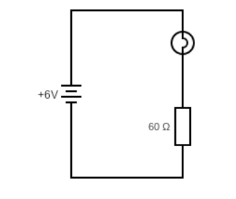
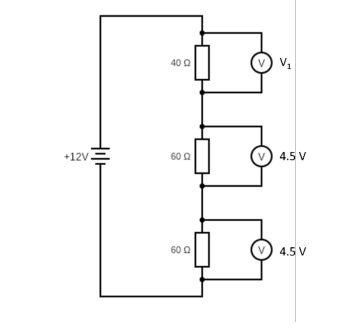
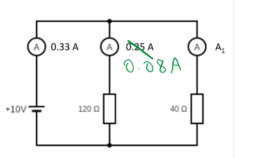
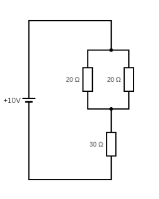
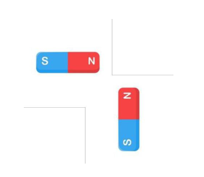
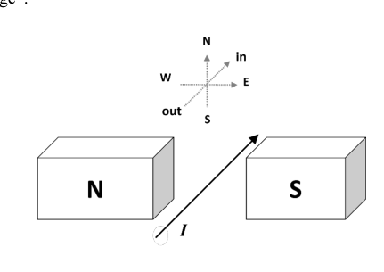
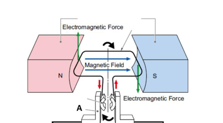

Climate science
Identify the types of radiation from the Sun that match these descriptions.
| Description | Type |
|---|---|
| Felt as heat | |
| Not visible to the human eye, but can damage skin | |
| Able to be seen by our eyes |
What type of radiation is emitted back towards the Earth's surface by greenhouse gases (leading to overall warming)? radiation
What is the key characteristic of all greenhouse gas molecules that lets them absorb and re-emit infrared radiation? (Hint: think about their atomic structure.)
They have 3 or more atoms in each molecule (e.g. CO2, H2O, CH4).
Number the stages of the enhanced greenhouse effect in the order they occur (1 = first).
| Description | Step |
|---|---|
| Additional greenhouse gases trap and emit extra heat, causing the Earth's temperature to rise significantly above historic levels. | |
| Non-reflected solar radiation is absorbed by land and oceans. | |
| Solar radiation reaches the Earth's atmosphere; some is reflected back into space. | |
| Human activities such as burning fossil fuels increase the concentration of greenhouse gases in the atmosphere. | |
| Some radiant heat is trapped by greenhouse gases in the atmosphere, keeping the Earth warm enough to sustain life. | |
| Heat radiates from the Earth back towards space. |
3 marks if all are correct; 1 mark for any 3 in the correct sequence.
The carbon cycle describes how carbon moves between the atmosphere, soil, living things, the ocean and human sources. One key chemical process is: 6CO2 + 6H2O → 6O2 + C6H12O6. Identify this process and explain its role in reducing the enhanced greenhouse effect.
Photosynthesis (1 mark). It removes carbon dioxide from the atmosphere and "stores" the carbon in plants such as trees (1 mark).
Explain why battery storage and/or a mix of renewable energy sources (wind, solar) is essential for a stable electricity supply.
Wind and solar energy are intermittent, because wind speed and sunlight vary (1 mark). A mix of sources, and batteries to store energy until it is needed, let the electricity grid provide a continuous, reliable supply (1 mark).
Electricity and magnetism
To demonstrate static electricity, a plastic rod is rubbed with wool so that electrons are removed from the rod. The rod is then brought close to a positively charged balloon. Which best describes what happens?
Removing electrons leaves the rod positive. Like charges repel.
Question 7 (3 marks)
The circuit shows a resistor and a globe connected in series.

On paper: draw an arrow showing the direction of conventional current; circle the globe; add a voltmeter that would measure the voltage across the resistor. Describe your diagram, then compare.
- Conventional current flows from the positive terminal of the battery (the long line), around the circuit to the negative terminal (1 mark).
- The globe is the circle with a loop inside (1 mark).
- The voltmeter (a circle with V) is connected in parallel across the 60 Ω resistor, on either side of it (1 mark).
James and Conrad built a circuit with a motor. The motor draws a current of 3.4 A and is supplied with 450 V. Calculate the resistance of the motor, to the nearest ohm.
R = V / I = 450 ÷ 3.4 (1 mark) = 132 Ω (1 mark).
Identify each material as an insulator or a conductor.
Gold:
Rubber:
Question 10 (3 marks)

Calculate the total resistance of the circuit.
RT = 40 + 60 + 60 = 160 Ω.
State the voltage across the 40 Ω resistor (V1).
The voltages in series add up to the supply: V1 = 12 − 4.5 − 4.5 = 3 V.
Question 11 (3 marks)

Calculate the total resistance of the circuit.
RT = (120 × 40) ÷ (120 + 40) = 4800 ÷ 160 = 30 Ω.
State the current in the 40 Ω resistor (A1).
The branch currents add up to the total: I1 = 0.33 − 0.08 = 0.25 A. (Check: 10 V ÷ 40 Ω = 0.25 A.)

Calculate the total resistance of the circuit above.
The parallel pair: (20 × 20) ÷ (20 + 20) = 10 Ω. Add the series resistor: 10 + 30 = 40 Ω.
Question 13 (3 marks)

On paper, draw 6 continuous field lines joining the poles of the bar magnets. Use arrows to show the direction of the field lines. Describe your drawing, then compare.
- Correct shape: lines loop around each magnet from one pole to the other, and do not touch or cross (1 mark).
- Correct direction: the arrows point away from N and towards S (1 mark).
- At least 6 lines (not random lines) (1 mark). (Lose 1 mark if lines touch or cross.)
Question 14 (1 mark)

Using the right-hand rule, find the direction of the force on the wire (current into the page):
Thumb into the page (current), fingers from left to right (the field goes from N to S): the palm faces down, so the force is south.
Question 15 (4 marks)
The diagram shows a simplified schematic of an electric motor.

Name the component labelled A, and describe its role.
A is a brush (1 mark). It provides a smooth (sliding) electrical contact between the battery circuit and the rotating coil (1 mark).
Describe two modifications that could make the motor spin faster.
Any two:
- Increase the current (by increasing the voltage).
- Increase the number of turns in the coil.
- Increase the strength of the magnetic field.
- Reduce the resistance of the coil (which increases the current).